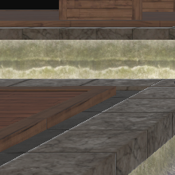
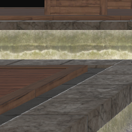

Abstract
This study presents Wavelet-Driven Super-Resolution using Fourier Mapped Neural Representations (WDSR), a novel framework that improves rendering quality while simultaneously reducing computational costs. Unlike interpolation-based upscaling techniques, WDSR takes advantage of temporal information, high-resolution G-buffers, and low-resolution images by using Fourier-mapped implicit neural representations combined with wavelet-domain processes to restore complex features accurately without compromising temporal coherence. Our method solves spectral bias, providing better textures, reduced aliasing, and better perceptual temporal coherence. By using a wavelet-domain approach, we break up frequency content, making multi-scale feature reconstruction possible. The final inverse wavelet transform produces images of high resolution. The process improves real-time rendering quality and prevents artefacts, offering an effective scalable approach that is well suited to modern pipelines.


 
